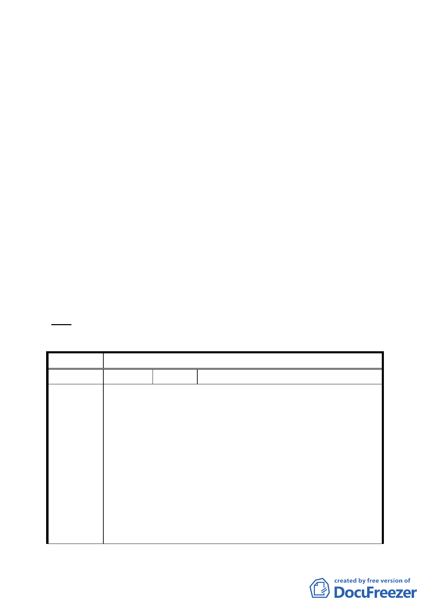

附件2
中山北路 2 段 93 巷以北及中山北路 2 段 93 巷 11 弄以東所圍
街廓範圍內，面積為 1721 平方公尺。
二、本更新單元土地使用分區為商四特（原屬第三種商業區），土
地及建築物均為私有。
三、更新單元東側及南側臨計畫道路側留設 3.64 公尺騎樓，北側
及西側臨計畫道路側退縮 4 公尺以上無遮簷人行道。
四、本案係市府 97 年 9 月 8 日以府都新字第 09730788500 號函送
到會。
五、申請單位：郭敬恩。
六、辦理單位：臺北市政府。
七、法令依據：都市計畫法第 66 條；都市更新條例第 5 條、第 6
條、第 8 條、第 11 條；臺北市都市更新自治條例第 15 條。
八、本更新單元業經市府審查符合更新單元劃定基準。
九、公民或團體陳情意見：計 1 件。
決議：本案更新單元劃定範圍照案通過。
臺北市都市計畫委員會公民或團體陳情意見綜理表
案名
編號
陳情理由
劃定臺北市中山區中山三小段 57 地號等 7 筆土地為更新單元
1 陳情人 陳寶森
1.有關本人所有座落於臺北市中山區三小段 62 地號（ 持分
1/10）所有權人，係本人於民國 77 年間以來夥同友人陳村富、
陳睿智、柯明泉（ 各持分 3/10）等 4 人陸續共同買進，登記
共同所有人，緣因渠等 3 人權利爭執發生糾紛，因而牽扯地
上物大樓，自民國 80 年間起予以閒置迄今，紛爭亦未協調處
理。
2.依大展公司旨意，市府已依臺北市都市更新自治條例第 12
條、「臺北市未經劃定應實施更新之地區自行劃定更新單元建
築物及地區環境評估標準」規定，將該公司檢附文件，經審
查符合規定 1 案，惟本人不予同意，理由如下:
（1）地上物大樓係符合都市計畫規範的十層大樓建築物，具有
68